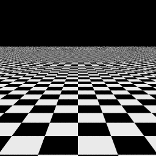
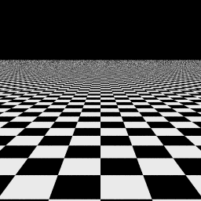
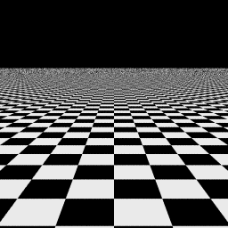
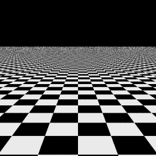
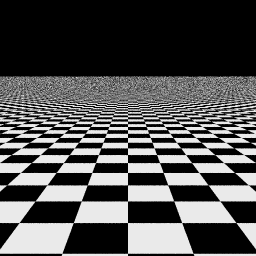
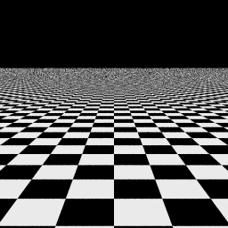
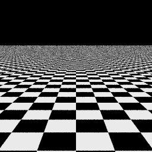
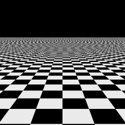

|
 |
| "Correct" image. No error |
Hammersley points with p1 = 2. Mean(|E|)=0.0086, S.D.(|E|)=0.0247 R.M.S.(E)=0.0261, Max.(|E|)=0.3451 |
|  |  |
| multi-jittered sampling, n=4, N=16. Mean(|E|)=0.0091, S.D.(|E|)=0.0261 R.M.S.(E)=0.0277, Max.(|E|)=0.3843 |
Hammersley points with p1 = 3. Mean(|E|)=0.0097, S.D.(|E|)=0.0265 R.M.S.(E)=0.0282, Max.(|E|)=0.3961 |
|  |  |
| Halton points with p1 = 2, p2 = 7. Mean(|E|)=0.0105, S.D.(|E|)=0.0280 R.M.S.(E)=0.0299, Max.(|E|)=0.3451 |
Halton points with p1 = 2, p2 = 3. Mean(|E|)=0.0110, S.D.(|E|)=0.0291 R.M.S.(E)=0.0312, Max.(|E|)=0.3686 |
|  |  |
| jittered sampling, 4x4. Mean(|E|)=0.0128, S.D.(|E|)=0.0335 R.M.S.(E)=0.0358, Max.(|E|)=0.3804 |
Poisson disk, d = 0.2. Mean(|E|)=0.0132, S.D.(|E|)=0.0338 R.M.S.(E)=0.0363, Max.(|E|)=0.3804 |
 |  |
| random sampling. Mean(|E|)=0.0179, S.D.(|E|)=0.0443 R.M.S.(E)=0.0478, Max.(|E|)=0.3961 |
regular sampling. Mean(|E|)=0.0188, S.D.(|E|)=0.0491 R.M.S.(E)=0.0526, Max.(|E|)=0.5098 |